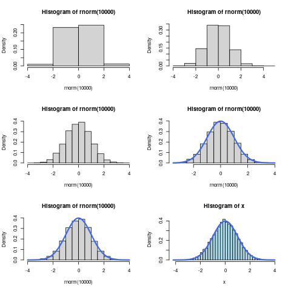
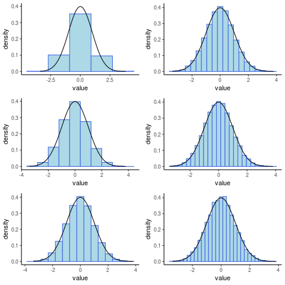

Thinking About Data
Table of Contents
- TODO Overheads
- Unit Information ATTACH
- Deriving the Normal Distribution
- Understanding the p-value
- Calculating Power
- Confidence Intervals
- Weekly Material
- (3); Comparison of Population Samples wk3
- DONE (4); Using Student’s t-Distribution wk4
- DONE (5) Discrete Distributions (Mapping Disease) wk5
- DONE (6) Paired t-test (Observation or Experiment) wk6
- TODO (7) Corellation (Do Taller People Earn More) wk7
- TODO (8) No Really do they Earn More? wk8
- wk9 Break wk9
- TODO (9) Do redheads have a lower pain threshold? wk10
- TODO (10) What is Normal? wk11
- TODO (11) Normality as opposed to deviant etc. wk12
- TODO (12) When it all goes Wrong wk13
- TODO (13) Exam Prep wk14
- Symlinks to Material
- Central Limit Theorem
TODO Overheads
TODO Install Emacs Application Framework
This is going to be necessary to deal with not just equations but links, tables and other quirks
The reason for this is that generating latex preview fragments is just far too slow to be useful in any meaningful fashion.
TODO Install a live preview for equations in org-mode
Here is one example but there was a better one I was using
TODO Experiment with using Bookdown to Merge all RMD Files
Unit Information ATTACH
Deriving the Normal Distribution
Power Series Series
A function \(f\) :
\[ f\left( z \right)= \sum^{\infty}_{i= 0} \left[ C_n\left( z- a \right)^n \right], \exists z \in \mathbb{C} \]
Is a Power Series a and will either:
- Converge only for \(x= a\),
- converge \(\forall x\)
- converge in the circle \(\left| z- a \right|
Example
\(f\left( x \right) = \sum_{n=0}^{\infty} \left[ n! \cdot x^n \right]\)
Because the terms inside the power series has a factorial the only test that will work is the limit ratio test so we use that to evaluate convergence. 1
let \(a_n= n!\cdot x^n\):
\[\begin{aligned} \frac{\lim_{n \rightarrow \infty }\left| a_{n+ 1} \right|}{\lim_{n \rightarrow \infty}\left| a_n \right| } &= \lim_{n \rightarrow \infty}\left| \frac{\left( n+ 1 \right) !\cdot x^n \cdot x}{n! \cdot x^n} \right| \\ &= \left( n+ 1 \right) \cdot \left| x \right| \\ &= 0 \iff x =0 \end{aligned}\]
\(\therefore\) The power series converges if and only \(x= 0\).
Representing a function as a Power Series
Ordinary functions can be represented as power series, this can be useful to deal with integrals that don’t have an elementary anti-derivative.
- Geometric Series
First take the Series:
\[\begin{aligned} S_n &= \sum_{n=0}^{n} r^k \\ &= 1 + r + r^2 + r^3 \ldots + r^{n-1} + r^n \\ \implies r \cdot S_n &= r + r^2 + r^3 + r^4 \ldots r^n + r^{n+ 1} \\ \implies S_n - r \cdot C_n &= 1 + r^{n+ 1} \\ \implies S_n &= \frac{1+ r^{n+ 1}}{1- r} \end{aligned}\]
So now consider the geometric series:
\[\begin{aligned} \sum^{\infty}_{k= 0} \left[ x^k \right] &= \lim_{n \rightarrow \infty}\left[ \sum^{n}_{k= 0} x^k \right]\\ &= \lim_{n \rightarrow \infty}\left[ \frac{1+ x^{n+ 1}}{1- x} \right]\\ &= \frac{1+ \lim_{n \rightarrow \infty}\left[ x^{n+ 1} \right]}{1 - x} \\ &= \frac{1+ 0}{1- x}\\ &= \frac{1}{1- x} \end{aligned}\]
- Using The Geometric Series to Create a Power Series
Take for example the function:
\[\begin{aligned} g\left( x \right)&= \frac{1}{1 + x^2} \end{aligned}\]
This could be represented as a power series by observing that:
\[\begin{aligned} \frac{1}{1- \#_1} = \sum_{n=0}^{\infty} \left[ \#_1^n \right] \end{aligned}\]
And then simply putting in the value of \(\#_1 = \left( - x^2 \right)\) :
\[\begin{aligned} \frac{1}{1- \left( - x^2 \right) } = \sum_{n=0}^{\infty} \left[ \left( - x^2 \right) ^n \right] \end{aligned}\]
Calculus Rules and Series
The laws of differentiation allow the following relationships:
- Differentiation
\[\frac{\mathrm{d} }{\mathrm{d} x}\left( \sum_{n=1}^{\infty} c_n\left( z- a \right) ^n \right) = \sum_{n=1}^{\infty} \left[ \frac{\mathrm{d} }{\mathrm{d} x}\left( c_n\left( z- a \right) ^n \right) \right] \]
- Integration
\[\int \left( \sum_{n=1}^{\infty} c_n \left( z- a \right) ^n\right) \mathrm{d}x = \sum_{n=1}^{\infty} \left[ c_n \left( z- a \right) ^n \right] \]
Taylor Series
This is the important one, the idea being that you can use this to easily represent any function as an infinite series:
Consider the pattern formed by taking derivatives of \(f\left( z \right)= \sum_{n=1}^{\infty} c_n \left( z- a \right)^n\):
\[\begin{aligned} f\left( z \right)&= c_0 + c_1\left( x- a \right)+ c_2\left( x- a \right)^2 + c_3\left( x- a \right)^3 + \ldots\\ & \implies f\left( a \right)= c_0\\ f'\left( z \right)&= c_1 + 2c_2\left( z- a \right) + 3c_3\left( z- a \right)^2 + 4c_4\left( z- a \right)^3 \\ & \implies f'\left( a \right)= c_1\\ f''\left( z \right)&= 2c_2+ 3\times 2\times c_3\left( z- a \right)+ 4 \times 3 c_4\left( z- a \right)^2 + \ldots \\ & \implies f''\left( a \right)= 2 \cdot c_2 \\ f'''\left( z \right)&= 3 \times 2 \times 1 \cdot c_3 + 4 \times 3 \times 2 c_4 \left( z - a \right) + \ldots \\ & \implies f'''\left( a \right)= 3! c_3 \end{aligned}\]
Following this pattern forward:
\[\begin{aligned} f^{\left( n \right)}\left( a \right)&= n!\cdot c_n \\ \implies c_n &= \frac{f^{\left( n \right)}\left( a \right)}{n!} \end{aligned}\]
Hence, if there exists a power series to represent the function \(f\), then it must be:
\[\begin{aligned} f\left( z \right)= \sum^{\infty}_{n= 0} \left[ \frac{f^{\left( n \right)}\left( a \right)}{n!}\left( x- a \right)^n \right] \end{aligned}\]
If the power series is centred around 0, it is then called a Mclaurin Series.
Modelling Normal Distribution
The Normal Distribution is a probability density function that is essentially modelled after observation.2
what is the $y$-axis in a Density curve? ggplot2 ATTACH
Consider a histogram of some continuous normally distributed data:
# layout(mat = matrix(1:6, nrow = 3)) layout(matrix(1:6, 3, 2, byrow = TRUE)) x <- rnorm(10000, mean = 0, sd = 1) sd(x) hist(rnorm(10000), breaks = 5, freq = FALSE) ## curve(dnorm(x, 0, 1), add = TRUE, lwd = 3, col = "royalblue") hist(rnorm(10000), breaks = 10, freq = FALSE) ## curve(dnorm(x, 0, 1), add = TRUE, lwd = 3, col = "royalblue") hist(rnorm(10000), breaks = 15, freq = FALSE) ## curve(dnorm(x, 0, 1), add = TRUE, lwd = 3, col = "royalblue") hist(rnorm(10000), breaks = 20, freq = FALSE) curve(dnorm(x, 0, 1), add = TRUE, lwd = 3, col = "royalblue") hist(rnorm(10000), breaks = 25, freq = FALSE) curve(dnorm(x, 0, 1), add = TRUE, lwd = 3, col = "royalblue") hist(x, breaks = 30, freq = FALSE, col = "lightblue") curve(dnorm(x, 0, 1), add = TRUE, lwd = 3, col = "royalblue")

(Or in ggplot2) as described in listing 3 and shown in figure 1
library(tidyverse) library(gridExtra) x <- rnorm(10000) x <- tibble::enframe(x) head(x) PlotList <- list() for (i in seq(from = 5, to = 30, by = 5)) { PlotList[[i/5]] <- ggplot(data = x, mapping = aes(x = value)) + geom_histogram(aes(y = ..density..), col = "royalblue", fill = "lightblue", bins = i) + stat_function(fun = dnorm, args = list(mean = 0, sd = 1))+ theme_classic() } # arrangeGrob(grobs = PlotList, layout_matrix = matrix(1:6, nrow = 3)) grid.arrange(grobs = PlotList, layout_matrix = matrix(1:6, nrow = 3))

Figure 3: Histograms Generated in ggplot2
Observe that the outline of the frequencies can be made arbitrarily close to a curve given that the bin-width is made sufficiently small. This curve, known as the probability density function, represents the frequency of observation around that value, or more accurately the area beneath the curve around that point on the $x$-axis will be the probability of observing values within that corresponding interval.
Strictly speaking the curve is the rate of change of the probability at that point as well.
Defining the Normal Distribution
Data are said to be normally distributed if, the plot of the frequency density curve is such that:
- The rate of change is proportional to:
- The distance of the score from the mean
- \(\frac{\mathrm{d} }{\mathrm{d} x}\left( f \right) \propto - \left( x- \mu \right)\)
- The frequencies themselves.
- \(\frac{\mathrm{d} }{\mathrm{d} x} \propto f\)
- The distance of the score from the mean
If the Normal Distribution was only proportional to the distance from the mean (i.e. \((x\propto-(x-\mu)\)) the model would be a parabola that dips below zero, as shown in No description for this link, so it is necessary to provide the restriction that the rate of change is also proportional to the frequency (i.e. \(y \propto y\)).
let \(f\) be the frequency of observation around \(x\), following these rules the plot would come to look something like figure 2:
Bell Curve

Modelling only distance from the mean
If we presumed the frequency (which we will call \(f\) on the $y$-axis) was proportional only to the distance from the mean the model would be a parabola:
\[\begin{aligned} \frac{\mathrm{d}f }{\mathrm{d} x} &\propto - \left( x- \mu \right)\\ \frac{\mathrm{d}f }{\mathrm{d} x}&= - k\left( x- \mu \right), \quad \exists k \in \mathbb{R}\\ \int \frac{\mathrm{d}f }{\mathrm{d} x} \mathrm{d}x &= - \int \left( x- \mu \right) \mathrm{d}x \end{aligned}\]
Using integration by substitution:
\[\begin{aligned} \text{let:} \quad v&= x- \mu\\ \implies \frac{\mathrm{d}v }{\mathrm{d} x}&= 1\\ \implies \mathrm{d}v &= \mathrm{d}x \end{aligned}\]
and hence
\[\begin{aligned} \int \frac{\mathrm{d}f }{\mathrm{d} x} \mathrm{d}x &= - \int \left( x- \mu \right) \mathrm{d}x \\ \implies \int \mathrm{d}p &= - \int v \mathrm{d}v \\ p&= - \frac{1}{2}v^2\cdot k + C \\ p&= - \frac{1}{2}\left( x- \mu \right)^2\cdot k + C \end{aligned}\]
Clearly the problem with this model is that it allows for probabilities less than zero, hence the model needs to be refined to:
- incorporate a slower rate of change for smaller values of \(f\) (approaching 0)
- incorporate a faster rate of change for larger values of \(f\)
- offset by the the condition that \(\frac{\mathrm{d}f }{\mathrm{d} x}\propto -\left( x- \mu \right)\)
Incorporating Proportional to Frequency
In order to make the curve bevel out for smaller values of \(f\) it is sufficient to implement the condition that \(\frac{\mathrm{d}f }{\mathrm{d} x} \propto f\):
\[\begin{aligned} \frac{\mathrm{d}f }{\mathrm{d} x} &\propto f\\ \int \frac{1}{f}\cdot \frac{\mathrm{d}f }{\mathrm{d} x} \mathrm{d}x&= k\cdot \int \mathrm{d}x \\ \ln{ \left| f \right| }&= k\cdot x\\ f&= C \cdot e^{\pm x} \\ f & \propto e^{\pm x} \end{aligned}\]
Putting both Conditions together
So in order to model the bell-curve we need:
\[\begin{aligned} f \propto f \wedge f &\propto - \left( x- \mu \right)\\ \implies \frac{\mathrm{d}f }{\mathrm{d} x} &\propto - f\left( x - \mu \right)\\ \int \frac{1}{f} \mathrm{d}f &= - k \cdot \int \left( x- \mu \right) \mathrm{d}x \\ \ln{ \left| f \right| }&= - k \int \left( x- \mu \right) \mathrm{d}x \end{aligned}\]
because \(f>0\) by definition, the absolute value operators may be dispensed with:
\[\begin{aligned} \ln{ \left( f \right) }&= - k\cdot \frac{1}{2}\left( x- \mu \right)^2 + C \\ f & \propto e^{\frac{\left( x - \mu \right)^2}{2}} \end{aligned}\]
Now that the function has been solved it is necessary to apply the IC’s in order to further simplify it.
- IC, Probability Adds to 1
The area bound by the curve must be 1 because it represents probability, hence:
\[\begin{aligned} 1&= \int_{-\infty}^{\infty} f \mathrm{d}f \\ 1&= - C \int_{-\infty}^{\infty} e^{\frac{k}{2} \left( x- \mu \right)^2} \mathrm{d}f \\ \end{aligned}\]
Using integration by substitution:
\[\begin{aligned} \text{let:} \quad u^2&= \frac{k}{2}\left( x - \mu \right)^2\\ u&= \sqrt{\frac{k}{2}} \left( x- \mu \right) \\ \frac{\mathrm{d}u }{\mathrm{d} x}&= \sqrt{\frac{k}{2}} \end{aligned}\]
hence:
\[\begin{aligned} 1&= - C \int_{-\infty}^{\infty} e^{\frac{k}{2} \left( x- \mu \right)^2}\\ 1&= \sqrt{\frac{2}{k}} \cdot C \int_{-\infty}^{\infty} e^{- u^2} \mathrm{d}u \\ 1^2&= \left( \sqrt{\frac{2}{k}} \cdot C \int_{-\infty}^{\infty} e^{- u^2} \mathrm{d}u \right)^2\\ 1^2&= \left( \sqrt{\frac{2}{k}} \cdot C \int_{-\infty}^{\infty} e^{- u^2} \mathrm{d}u \right) \times \left( \sqrt{\frac{2}{k}} \cdot C \int_{-\infty}^{\infty} e^{- u^2} \mathrm{d}u \right) \end{aligned}\]
Because this is a definite integral \(u\) is merely a dummy variable and instead we can make the substitution of \(x\) and \(y\) for clarity sake.
\[\begin{aligned} 1^2&= \left( \sqrt{\frac{2}{k}} \cdot C \int_{-\infty}^{\infty} e^{- x^2} \mathrm{d}x \right) \times \left( \sqrt{\frac{2}{k}} \cdot C \int_{-\infty}^{\infty} e^{- y^2} \mathrm{d}y \right) \end{aligned}\]
Now presume that the definite integral is equal to some real constant \(\beta \in \mathbb{R}\):
\[\begin{aligned} 1&= \frac{2}{k}\cdot C^2 \int_{-\infty}^{\infty} e^{- y^2} \mathrm{d}y \times \beta \\ &= \frac{2}{k}\cdot C^2 \int_{-\infty}^{\infty} \beta\cdot e^{- y^2} \mathrm{d}y \\ &= \frac{2}{k}\cdot C^2 \cdot \int_{-\infty}^{\infty} \left( \int_{-\infty}^{\infty} e^{- x^2} \mathrm{d}x \right)e^{- y^2} \mathrm{d}y\\ &= \frac{2}{k}\cdot C^2 \int_{-\infty}^{\infty} \int_{-\infty}^{\infty} e^{- \left( x^2+ y^2 \right)} \mathrm{d}x \mathrm{d}y \end{aligned}\]
This integral will be easier to evaluate in polar co-ordinates, a double integral may be evaluated in polar co-ordinates using the following relationship: 3
\[\begin{aligned} \iint_D f\left( x,y \right) dA = \int_{\alpha}^{\beta} \int_{h_1\left( \phi \right)}^{h_2\left( \phi \right)} f\left( r \cdot \cos{\left( \phi \right)} , r \cdot \sin \left( \phi \right)\right) \mathrm{d}r \mathrm{d}\phi \end{aligned}\]
hence this simplifies to:
\[\begin{aligned} 1&= \frac{2}{k} c ^2 \int_{0}^{2 \pi } \int_{0}^{r} r \cdot e^{\left( r \cdot \cos{\theta}\right)^2+ \left( r \cdot \sin{\theta} \right)^2} \mathrm{d}r \mathrm{d}\theta \\ 1&= \frac{2}{k} c ^2 \int_{0}^{2 \pi} \int_{0}^{r} r \cdot e^{r^2} \mathrm{d}r \mathrm{d}\theta \end{aligned}\]
Because the integrand is of the form \(f'\left( x \right)\times g\left( f\left( x \right) \right)\) we may use integration by substitution:
\[\begin{aligned} \text{let:} \quad u&= - r^2\\ \frac{\mathrm{d}u }{\mathrm{d} r} &= - 2 r \\ \mathrm{d} r &= - \frac{1}{2r} \mathrm{d} u \end{aligned}\]
and hence:
\[\begin{aligned} 1&= \frac{2}{k} c ^2 \int_{0}^{2 \pi} \int_{0}^{r} r \cdot e^{r^2} \mathrm{d}r \mathrm{d}\theta \\ \implies 1&= - \frac{2}{k}c^2 \int_{0}^{2 \pi} \int_{0}^{\infty} r \cdot e^{r^2} \mathrm{d}r \mathrm{d}\theta \end{aligned}\]
\[\begin{aligned} 1&= \frac{2}{k} c ^2 \int_{0}^{2 \pi} \int_{0}^{r} r \cdot e^{r^2} \mathrm{d}r \mathrm{d}\theta \\ \implies 1&= - \frac{2}{k}c^2 \int_{0}^{2\pi} \int_{0}^{\infty} - \frac{1}{2}e^{- u} \mathrm{d}u \mathrm{d}\theta \\ &= \frac{1}{k}c^2 \int_{0}^{2\pi} \int_{0}^{\infty} e^{- u} \mathrm{d}u \mathrm{d}\theta \\ &= \frac{1}{k} c^2 \int_{0}^{2\pi} \left[ - e^{- u} \right]_{0}^{\infty}\mathrm{d}\theta \\ 1&= \frac{1}{k}c^2 2 \pi \\ \implies C^2&= \frac{k}{2\pi} \end{aligned}\]
So from before:
\[\begin{aligned} f&= - C \cdot e^{k\cdot \frac{\left( x- \mu \right)^2}{2}} \\ &= - \sqrt{\frac{k}{2\pi}} \cdot e^{k\cdot \frac{\left( x- \mu \right)^2}{2}} \end{aligned}\]
so now we simply need to apply the next initial condition.
- IC, Mean Value and Standard Deviation
- Definitions
The definition of the expected value, where \(f(x)\) is a probability function is: 4
\[\begin{aligned} \mu= E(x) = \int^{b}_{a} x \cdot f\left( x \right) \mathrm{d}x \end{aligned}\]
That is, roughly, the sum of the expected proportion of occurence.
The definition of the variance is:
\[\begin{aligned} V\left( x \right)= \int_{a}^{b} \left( x- \mu \right)^2 f\left( x \right) \mathrm{d}x \end{aligned}\]
which can be roughly interpreted as the sum of the proportion of squared distance units from the mean. The standard deviation is \(\sigma = \sqrt{V(x)}\).
- Expected Value of the Normal Distribution
The expected value of the normal distribution is \(\mu\), this can be shown rigorously:
\[\begin{aligned} \text{let:} \quad v&= x- \mu \\ \implies \mathrm{d} v&= \mathrm{d} x \end{aligned}\]
Observe that the limits of integration will also remain as \(\pm \infty\) following the substitution:
\[\begin{aligned} E\left( v \right)&= \int_{-\infty}^{\infty} v\times f\left( v \right) \mathrm{d}v \\ &= k\cdot \int_{-\infty}^{\infty} v\cdot e^{v^2} \mathrm{d}v \\ &= \frac{1}{2} \left[ e^{x^2} \right]^{\infty}_{\infty}\\ &= \frac{1}{2} \lim_{b \rightarrow \infty} \left[\left[ e^{x^2} \right]^{b}_{-b} \right] \\ &= \frac{1}{2} \lim_{b \rightarrow \infty} \left[ e^{b^2} - e^{\left( - b \right)^2} \right]\\ &= \lim_{b \rightarrow \infty}\left[ 0 \right] \times \frac{1}{2}\\ &= \frac{1}{2} \times 0 \\ &= 0 \end{aligned}\]
Hence the Expected value of the standard normal distribution is \(0=x-\mu\) and so \(E(x)=\mu\).
- Variance of the Normal Distribution
Now that the expected value has been confirmed, consider the variance of the distribution:
\[\begin{aligned} \sigma^2 &= \int_{-\infty}^{\infty} \left( x- \mu \right) ^2 \times f \left( x \right) \mathrm{d}x \\ \end{aligned}\]
Now observe that \(\left( x- \mu \right)\) appears as an exponential and as a factor if this is redefined as \(w= x- \mu \implies \mathrm{d} x= \mathrm{d} w\) we have:
\[\begin{aligned} \sigma^2&= \sqrt{\frac{k}{2}} \int_{-\infty}^{\infty} w^2e^{-\frac{k}{2}w^2} \mathrm{d}w \end{aligned}\]
Now the integrand is of the form \(f\left( x \right)\times g\left( x \right)\) meaning that the only strategy to potentially deal with it is integration by parts:
\[\begin{aligned} \int u \mathrm{d}v&= u\cdot v- \int v \mathrm{d}u \end{aligned}\] where:
- \(u\) is a function that simplifies with differentiation
- \(\mathrm{d} v\) is something that can be integrated
Hence the value of the variance may be solved:
Now that the expected value has been confirmed, consider the variance of the distribution:
\[\begin{aligned} \sigma^2&= \int_{-\infty}^{\infty} \left( x- \mu \right)^2\times f\left( x \right) \mathrm{d}x \\ &= \int_{-\infty}^{\infty} \left( x- \mu \right)^2\times \left( \sqrt{\frac{k}{2\pi}}e^{- \frac{k}{2}\left( x- \mu \right)^2} \right)\mathrm{d}x \\ &= \sqrt{\frac{k}{2\pi}} \int_{-\infty}^{\infty} \left( x- \mu \right)^2\times \left( e^{- \frac{k}{2}\left( x- \mu \right)^2} \right)\mathrm{d}x \end{aligned}\]
Now observe that \(\left( x- \mu \right)\) appears as an exponential and as a factor if this is redefined as \(w= x- \mu \implies \mathrm{d} x= \mathrm{d} w\) we have:
\[\begin{aligned} \sigma^2&= \sqrt{\frac{k}{2}} \int_{-\infty}^{\infty} w^2e^{-\frac{k}{2}w^2} \mathrm{d}w \end{aligned}\]
Now the integrand is of the form \(f\left( x \right)\times g\left( x \right)\) meaning that the only strategy to potentially deal with it is integration by parts:
\[\begin{aligned} \int u \mathrm{d}v&= u\cdot v- \int v \mathrm{d}u \end{aligned}\] where:
- \(u\) is a function that simplifies with differentiation
- \(\mathrm{d} v\) is something that can be integrated
Hence the value of the variance may be solved:
\[\begin{aligned} \sigma^2&= \sqrt{\frac{k}{2\pi}} \int_{-\infty}^{\infty} w^2e^{-\frac{k}{2}w^2} \mathrm{d}w \\ &= \sqrt{\frac{k}{2\pi}} \left[ u\cdot v - \int v \mathrm{d}u \right]^{\infty}_{\infty}\\ &= \sqrt{\frac{k}{2\pi}} \left( \left[ \frac{-w}{k}\cdot e^{-\frac{k}{2}w^2} \right]^{\infty}_{\infty} - \frac{1}{k} \int^{\infty}_{-\infty} e^{\frac{k}{2}w^2} \mathrm{d}w \right) \\ &= \sqrt{\frac{k}{2\pi}} \left[ \frac{-w}{k}\cdot e^{-\frac{k}{2}w^2} \right]^{\infty}_{\infty} - \frac{1}{k} \left( \sqrt{\frac{k}{2\pi}} \int^{\infty}_{-\infty} e^{\frac{k}{2}w^2} \mathrm{d}w \right) \\ \end{aligned}\]
The left term evaluates to zero and the right term is the area beneath the bell curve with mean value 0 and so evaluates to 1:
\[\begin{aligned} \sigma^2&= 0- \frac{1}{k}\\ \implies k&= \frac{1}{\sigma^2} \end{aligned}\]
So the function for the density curve can be simplified:
\[\begin{aligned} &= - \sqrt{\frac{k}{2\pi}} \cdot e^{k\cdot \frac{\left( x- \mu \right)^2}{2}}\\ &= \sqrt{\frac{1}{2\pi \sigma^2}} \cdot e^{ \frac{1}{2}\cdot \frac{\left( x- \mu \right)^2}{\sigma^2}} \end{aligned}\]
now let \(z= \frac{ x- \mu }{\sigma} \implies \mathrm{d}z= \frac{\mathrm{d} x}{\sigma}\), this then simplifies to:
\[\begin{aligned} f\left( x \right)= \sqrt{\frac{1}{2\pi}}\cdot e^{- \frac{1}{2}z^2} \end{aligned}\]
Now using the power series identity from BEFORE :
\[\begin{aligned} e^{- \frac{1}{2}z^2}= \sum^{\infty}_{n= 0} \left[\frac{ \left( - \frac{1}{2}z^2 \right)^n}{n!} \right] \end{aligned}\]
We can solve the integral of \(f\left( x \right)\) (which has no elementary integral.
\[\begin{aligned} f\left( x \right)&= \sqrt{\frac{1}{2\pi}}\cdot \sum^{\infty}_{n= 0} \left[\frac{ \left( - \frac{1}{2}z^2 \right)^n}{n!} \right] \\ \int f\left( x \right) \mathrm{d}x &= \frac{1}{\sqrt{2\pi} }\int \sum^{\infty}_{n= 0} \left[ \frac{\left( - \frac{1}{2}z^2 \right)^n}{n!} \right] \mathrm{d}z \\ &= \frac{1}{\sqrt{2\pi} }\cdot \sum^{\infty}_{n= 0} \left[ \int \frac{\left( - 1 \right)^{- 1}z^{2n}}{2^n\cdot n!} \mathrm{d}z \right] \\ &= \frac{1}{\sqrt{2\pi} }\cdot \sum^{\infty}_{n= 0} \left[ \frac{\left( - 1 \right)^n \cdot z^{2n+ 1}}{2^n\left( 2n+ 1 \right)n!} \right] \end{aligned}\]
Although this is a power series it still gives a method to solve the area beneath the curve of the density function of the normal distribution.
- Definitions
Understanding the p-value
Let’s say that I’m given 100 vials of medication and in reality only 10 of them are actually effective.
| POS | POS | POS | POS | POS | POS | POS | POS | POS | POS |
| :-: | :-: | :-: | :-: | :-: | :-: | :-: | :-: | :-: | :-: |
| NEG | NEG | NEG | NEG | NEG | NEG | NEG | NEG | NEG | NEG |
| NEG | NEG | NEG | NEG | NEG | NEG | NEG | NEG | NEG | NEG |
| NEG | NEG | NEG | NEG | NEG | NEG | NEG | NEG | NEG | NEG |
| NEG | NEG | NEG | NEG | NEG | NEG | NEG | NEG | NEG | NEG |
| NEG | NEG | NEG | NEG | NEG | NEG | NEG | NEG | NEG | NEG |
| NEG | NEG | NEG | NEG | NEG | NEG | NEG | NEG | NEG | NEG |
| NEG | NEG | NEG | NEG | NEG | NEG | NEG | NEG | NEG | NEG |
| NEG | NEG | NEG | NEG | NEG | NEG | NEG | NEG | NEG | NEG |
| NEG | NEG | NEG | NEG | NEG | NEG | NEG | NEG | NEG | NEG |
| NEG | NEG | NEG | NEG | NEG | NEG | NEG | NEG | NEG | NEG |
We don’t know which ones are effective so It is necessary for the effective medications to be detected by experiment. Let:
- the p-value be 9% for detecting a significant effect
- assume the statistical power is 70%
So this means that the corresponding errors are:
- Of the 90 Negative Drugs, \(\alpha \times 90 \approx 8\) will be identified as Positive ( False Positive) a. This means 72 will be correctly identified as negative. (TN)
- Of the 10 Good drugs \(\beta \times 10 = 3\) will be labelled as negative (False Negative) b. This means 8 will be correctly identified as positive (True Positive)
These results can be summarised as:
| Really Negative | Really Positive | |
| Predicted Negative | TNR; (\(1-\alpha\)) | FNR; \(\beta \times 10 = 3\) |
| Predicted Positive | FPR; \(\mathsf{FPR}= \alpha \times 90 \approx 8\) | TPR (\(1-\beta\)) |
And a table visualising the results:
| TP | TP | TP | TP | TP | TP | TP | FN | FN | FN |
| :-: | :-: | :-: | :-: | :-: | :-: | :-: | :-: | :-: | :-: |
| FP | FP | FP | FP | FP | FP | FP | FP | TN | TN |
| TN | TN | TN | TN | TN | TN | TN | TN | TN | TN |
| TN | TN | TN | TN | TN | TN | TN | TN | TN | TN |
| TN | TN | TN | TN | TN | TN | TN | TN | TN | TN |
| TN | TN | TN | TN | TN | TN | TN | TN | TN | TN |
| TN | TN | TN | TN | TN | TN | TN | TN | TN | TN |
| TN | TN | TN | TN | TN | TN | TN | TN | TN | TN |
| TN | TN | TN | TN | TN | TN | TN | TN | TN | TN |
| TN | TN | TN | TN | TN | TN | TN | TN | TN | TN |
| TN | TN | TN | TN | TN | TN | TN | TN | TN | TN |
So looking at this table, it should be clear that:
- If the null hypothesis had been true, the probability of a False Positive
would indeed have been \(\frac{8}{90}\approx 0.09\)
- The probability of incorrectly rejecting the null hypothesis though is the
number of FP from anything identified as positive \(\frac{7}{7+6} \approx 0.5\)
False Positive Rate
The False Positive Rate is expected to be \(\alpha\) it is:
\[\begin{aligned} \mathrm{E}\left( \mathsf{FPR} \right) &= \alpha \mathsf{;}\\ \mathsf{FPR}&=\frac{FP}{N}\\ &= \frac{FP}{FN+TP}\\ &= \frac{8}{8+72}\\ &= 9\% \end{aligned}\]
False Discovery Rate
The False discovery Rate is the proportion of observations considered as positive (or significant) that are False Positives. If you took all the results you considered as positive and pulled one out, the probability that one was a false positive (and you were commiting a type I error) would be the FDR and could be much higher than the FPR.
Measuring Probability
In setting \(\alpha\) as 9% I’ve said that ’if the null hypothesis was true and every vial was negative, 9% of them would be false positives’, this means that in practice 9% of the negative vials would be detected as false positives (I wouldn’t count the positives because my \(\alpha\) assumption was made under the assumption that everything was negative, hence 9% of the negative vials will be false positives).
So this measures the probability of rejecting the null hypothesis if it were true.
It does not measure the probability of rejecting the null hypothesis but then being mistaken, because to reject the null hypothesis it is necessary to consider observations that are considered positive (whether or not they actually are), the number of those that are False Positive would represent the probability of committing a type 1 error in that experiment
So the \(p\) -value measures the probability of committing a type I error under the assumption that the null hypothesis is true.
The FDR represents the actual probability of committing a type I error when taking multiple comparisons.
Comparing \(\alpha\) and the p-value
The distinction between \(\alpha\) and \(p\) -value is essentially that the \(\alpha\) value is set as a significance standard and the \(p\) -value represents the probability of getting a test-statistic \(\geq\) the observed value
The \(\alpha\) value is the probability of
Rejecting the null hypothesis under the assumption that the null hypothesis is true.
This will be the False Positive Rate:
The proportion of Negative Observations misclassified as Positive will be the False Positive Rate.
Be careful though because this is not necessarily the probability of incorrectly rejecting the null hypothesis there is also the the \(\mathsf{FDR}=\frac{\mathsf{FP}}{\mathsf{TP+FP}}\):
The proportion of observations classified as positive that are false positives, this estimates the probability of rejecting the null hypothesis and being wrong. (whereas the \(\alpha\) value is the probability of rejecting the null hypothesis under the assumption it was true this is different from the probability of rejecting \(H_0\) and being wrong, which is the FDR).
The \(p\) -value is the corresponding probability of the test statistic that was returned, so they mean essentially the same thing, but the \(\alpha\) value is set before hand and the $p$-value is set after the fact:
The $p$-value is the probability, under the assumption that there is no true effect or no true difference, of collecting data that shows a difference equal to or more extreme than what was actually observed.
Wikipedia Links
Helpful Wikipedia Links
- False Positive Rate
- False Discovery Rate
- Sensitivity and Specificity
- ROC Curve
- This has all the TP FP calculations
- Type I and Type II Errors
- This has the useful Tables and SVG Density Curve
Calculating Power
Statistical Power is the probability of rejecting the null hypothesis assuming that the null hypothesis is false (True Positive).
Complementary to the False Positive Rate and False Detection Rate, the power is distinct from the probability of correctly rejecting the null hypothesis, which is the probability of selecting a True Positive from all observations determined to be positive (the Positive Predictive Value or the Precision):
\[\begin{aligned} PPV=\frac{TP}{TP+FP}\\ FDR=\frac{FP}{TP+FN}\\ \alpha = \frac{FP}{N}=\frac{TP}{TN+FP}\\ \beta = \frac{TP}{P}=\frac{TP}{TP+FN} \end{aligned}\]

Example
Problem
An ISP stated that users average 10 hours a week of internet usage, it is already known that the standard deviation of this population is 5.2 hours. A sample of \(n=100\) was taken to verify this claim with an average of \(\bar{x}\).
A worldwide census determined that the average is in fact 12 hours a week not 10.
Solution
- Hypotheses
- \(H_0 \quad :\) The Null Hypothesis that the average internet usage is 10 hours per week
- \(H_a \quad :\) The Alternative Hypothesis that the average internet usage exceeds 10 hours a week
- Data
Value Description \(n=100\) The Sample Size \(\sigma= 5.2\) The Standard Deviation of internet usage of the population \(\mu=10\) The alleged average internet usage. \(\bar{x}=11\) The average of the sample \(\mu_True=12\) The actual average from the population \(\alpha=0.05\) The probability of a type 1 error at which the null hypothesis is rejected \(\beta=??\) The probability of a type 2 error
Step 1; Find the Critical Sample Mean (\(\bar{x}_\mathsf{crit}\))
The Central Limit Theorem provides that the mean value of a sample that is:
- sufficiently large, or
- drawn from a normally distributed population
will be normally distributed, so if we took various samples of a population and recorded all the sample means in a set \(\overline{X}\) we would have: will be normally distributed, so if we took various samples of a population and recorded all the sample means in a set \(\overline{X}\) we would have:
\[\overline{X} \sim \mathcal{N}\left( \mu, \left( \frac{\sigma}{\sqrt{n} } \right) \right)\]
And hence we may conclude that:
\[\begin{aligned} Z&= \frac{\overline{x} - \mu}{\left( \frac{\sigma}{\sqrt{n} } \right) } \\ \implies \overline{x}_{crit}&= \mu + z_\alpha \cdot \left( \frac{\sigma}{\sqrt{n} } \right) \\ \overline{x}_{crit} &= \mu + z_{0.05} \cdot \left( \frac{\sigma}{\sqrt{n} } \right) \\ \overline{x}_{crit}&= \mu + 1.645 \cdot \left( \frac{5.2}{\sqrt{100} } \right) \\ &= 10.8554 \end{aligned}\]
Thus \(H_0\) is rejected for a sample mean of 10.86 hours per week at a confidence level of \(\alpha = 0.05\).
Step 2: Find the Difference between the Critical and True Means as a Z-Value (prob of Type II)
The probability of accepting the null hypothesis assuming that it is false, is the probability of getting a value less than the critical value given that the mean value is actually 12:
\[\begin{aligned} z&= \frac{\overline{x}_{crit}- \mu_{true}}{\left( \frac{\sigma}{\sqrt{n} } \right) } \\ &= \frac{10.86 - 12}{\frac{5.2}{10}} &= -2.2 \end{aligned}\]
Step 3: State the value of \(\beta\)
\[\begin{aligned} \beta &= \mathrm{P}\left( \textsf{Type II Error} \right) \\ &= \mathrm{P}\left( H_0 \textsf{ is not rejected} \mid H_0 \textsf{ is false} \right) \\ &= \mathrm{P} \left( \mu_{\overline{X}_{\textsf{Crit}}} < \overline{x}_{\textsf{crit}} \mid \mu = 12 \right) \\ &= 0.014 \end{aligned}\]
Step 4: State the Power Value
\[\begin{aligned} \mathsf{Power} &= \left( H_0\textsf{ is not rejected} \mid H_0 \textsf{ is false} \right) \\ &= \mathrm{P}\left( \mu_{\overline{X}_{\textsf{Crit}}} < \overline{x}_\textsf{Crit} \right) \\ &= 1 - \beta \\ &= 1 - 0.14 \\ &= 98.6\% \end{aligned}\]
Confidence Intervals
Khan Academy
According to Khan Academy:
This means that for any sample drawn from the population, the true population value would be found within this interval for 0.95 of those samples
The Confidence Interval is not the probability ATTACH
adapted from:
I assume that the motivation for this question is that most statistics books emphasize the fact that, once you have taken a sample and constructed the confidence interval (CI), there is no longer any randomness left in a CI statement (except for the Bayesian point of view which thinks of \(\mu\) as being a random variable).
That is, when reporting a CI: I am 95% confident that the mean is between 25.1 and 32.6 is correct. There is a 95% probability that the mean is between 25.1 and 32.6 is WRONG. Either μ is in that interval or not; there is no probability associated with it.
The Reasoning
Suppose that somewhere on the wall is an invisible bullseye a special point (call it μ ) which only I can see. Im going to throw a dart at μ . Based on long observation, you know that when I throw a dart at something, 95% of the time, my dart will hit within 6 inches of what I was aiming at. (The other 5% of the time, I miss by more than 6 inches.) When you see where that dart lands, you will draw a circle around it with a radius of 6 inches.
It is correct to say:
The probability that μ will be in that circle is 95%.
The reason that is correct is, I have not yet thrown the dart, so the location of the circle is random, and in 95% of repetitions of this dart-throwing, circle-drawing routine, μ will be in the resulting circle. Now if I actually take aim, throw my dart, and it hits
\[ \text{right here }\implies \cdot \]
It is no longer correct to talk about probabilities. You can be pretty sure that μ is within that circle. To be specific, pretty sure = 95% confident. But you cannot say that the probability that μ is in that circle is 95%, because μ is not random.This throw might have been one of the 5% of throws that miss μ by more than 6 inches.
Lets assume we want a 95% CI for μ from a normal population with a known standard deviation σ , so the margin of error is:
\[ M=1.96\frac\sigma{\sqrt n} \]
Then \(\overline{X}\) is the dart we are throwing at μ.
Before you take the sample and compute the mean, you have:
\[ P(\overline X-M<\mu<\overline X+M)=95\%\tag*{} \]
This is correct because \(\overline X\) is a random variable. However, once you compute the mean \(\overline x\) (lowercase x meaning it is now just a number, not a random quantity), the inequality:
\[ \overline x-M<\mu<\overline x+M \]
is either true or false; the dart has landed at \(\overline x\) , and we dont know if this was one of the throws that is within M of μ.
Classical Confidence Interval
A classical confidence interval contains all values for which the data do not reject the null hypothesis that the parameter is equal to that value.
This does not necessarily tell you anything regarding the probability that the parameter is in the interval.
If however you intended to take a sample of the data and draw a 92% confidence interval, there would be a 92% probability of the population mean being within that interval, if however you drew that sample and created that interval the the probability of the invisible point μ being within that interval can’t really be known because we just don’t know where it is relative to the dart (i.e. how well the sample reflects the population).
Weekly Material
(3); Comparison of Population Samples wk3
Lecture
- Boxplots
The delimiting marks in box plots correspond to the median and interquarlite range (which is basically the median of all data below the median):
library("ggplot2") ggplot(iris, aes(x = Sepal.Width, y = Sepal.Length, color = Species)) + geom_boxplot() + theme_bw()
Figure 6: Bar Plots Generated in ggplot2
- Lecture Announcements
Everything is online now. We’ll be using Zoom a lot.
- Naming Variables
Attribute … Data Base
- DONE Review Chi Distribution,
- DONE Fix YAML Headers in
rmdto play ball with Notable
- DONE Post this use-case to Reddit
- DONE Fix YAMLTags and TagFilter and Post to Reddit bash
- TODO Post an easy way to use this to the mailing list
Here is a start that I’ve made
- Should I have all the lists and shit in
/tmp
Pros Cons Less Mess Harder to Directly watch what’s happening Easier to manage 5 should I use
/tmpor/tmp/Notesor somting? - DONE Is there an easy way to pass the md off to vnote
Or should I just use the
ln -s ~/Notes/DataSci /tmp/notestrick?Follow the instructions here, it has to be done manually and then symlinked SCHEDULED:
- Should I have all the lists and shit in
/tmp
Pros Cons Less Mess Harder to Directly watch what’s happening Easier to manage 5 should I use
/tmpor/tmp/Notesor somting?
- TODO Post an easy way to use this to the mailing list
- DONE Is there a way to fix the Text Size of Code in emacs when I zoom out?
Yeah just disable
M-x mixed-pitch-mode
- DONE Post this use-case to Reddit
- Calculalating mean
library(tidyverse) bwt <- c(3429, 3229, 3657, 3514, 3086, 3886) (bwt <- sort(bwt)) mean(bwt) mean(c(3429, 3514)) median(bwt) max(bwt)-min(bwt)
The mean value is nice in that it has good mathematical properties, so for predictions and classifications (like gradient descent), if the model contains the mean the model will be smooth and the mean will lead to a well behaved model with respect to the derivative.
The Median value, however is more immune to large outliers, for example:
library(tidyverse) x <- c(rnorm(10), 9) * 10 %>% round(1) mean(x); median(x)
- Calculating Range
range(bwt) bwt %>% range %>% diff
- Calculating Variance
(var <- (bwt-mean(bwt))^2 %>% mean) var(bwt) (sd <- (bwt-mean(bwt))^2 %>% %>% sqrt) # Not using n-1 !! (sd <- sqrt(sum((bwt-mean(bwt))^2)/(length(bwt) -1))) sd(bwt) mean(sum((bwt-mean(bwt))^2))
- InterQuartile Data
DONE (4); Using Student’s t-Distribution wk4
DONE (5) Discrete Distributions (Mapping Disease) wk5
DONE Quizz for t Distribution Material
Lecture
The Poisson Model is the Binomial Model stretch towards its limits.
- Combinatorics
The Counting Formulas are:
selection ordered unordered With Repetition \(n^m\) \(\binom{m+n-1}{n}\) Without Repetition \(n_{(m)}\) \(\binom{n}{m}\) Where:
- \(\binom{n}{m} =\frac{m_(n)}{n!}=\frac{m!}{n!(m-n)!}\)
- \(n_{(m)}=\frac{n!}{(n-m)!}\)
- \(n! = n \times (n-1) \times (n-2) \times 2 \times 1\)
- Binomial Distribution
A Binomial experiment requires the following conditions:
- We have n independent events.
- Each event has the same probability p of success.
- We are interested in the number of successes from the \(n\) trials (referred to
as
sizein R. - The probability of k successes from the n trials is a Binomial distribution with
probabilities:
\[\begin{aligned} P\left( k \right)= \binom{n}{k} p^k \left( 1- p \right)^{n- k} \end{aligned}\]
- Problem
Hard drives have an annual failure rate of 10%, what is the probability of 2 hard drives failing after 3 years?
This means that:
- The number of repetitions is 3 (\(n\) =
size= 3) The statistic we are interested in is 2 (\(k\) =
x= 2)dbinom(x = 2, size = 3, prob = 0.1) ## For Hard Drives ## k/x....is the number of years ## n/ ....size is the number of failures ## p ....is the probability of failure ## choose(n,k)*p^k*(1-p)^(n-k) ## dbinom(x = 2, size = 4, prob = p)
So in this case there would only a 2% chance.
- The number of repetitions is 3 (\(n\) =
- Poisson
An interesting thing with the poisson distribution is that the mean value and the variance are both equal.
The expected value is the limit that the mean value would approach if the sample was made arbitrarily large, the value is denoted \(\lambda\)
Poisson is French for fish so sometimes people call the distribution the fishribution.
- Binomial and Poisson
The Poisson distribution is derived from the Binomial distribution.
If \((1-p)\) is close to 1 then \(np(1-p) \approx np\), so for very large sample sizes we have the expected value equal to the variance, and a Poisson distribution.
This has something to do with widely increasing the number of trials, like say if we hade an infinite number of trials with the probability of success in a given hour as 30%.
For a binomial distribution there are a set number of trials, let’s say 8 trials with a 20% probability of Success:
1 2 3 4 5 6 7 8 F S F F S S F F In this case there are 3 successes, so let’s set \(k=3\) and instead however the region was divided into smaller spaces (\(n \rightarrow \infty\)):
1 2 3 4 5 6 7 8 9 10 11 12 13 14 15 16 X S X X S S F F X S X X S S F F If we kept dividing this up we would have
The poisson is the limit as we increase the number of trials but try to keep \(k\) constant??
- Confidence Intervals
- Binomial
Just use bootstrapping, but also you can just use an approximate standardisation:
\[\begin{aligned} \sigma &= \sqrt{p\left( 1- p \right) } \\ \sigma_{\overline{x}}&= \frac{\sigma}{\sqrt{n} } \\ &= \frac{\sqrt{p\left( 1- p \right) }}{\sqrt{n} } \ \\ \implies p-z_{0.025}\times \sigma_{\overline{x}} < &p < p-z_{0.975}\times \sigma_{\overline{x}} \\ \implies p-1.96 \sigma_{\overline{x}} < &p < p-z_{0.975} 1.96 \sigma_{\overline{x}} \end{aligned}\]
So an approximate 95% confidence interval could be
This is the normal data, but remember that this is estimating binomial by standard normal and so will only be good for large values of n because binomial is discrete by nature.
See the Correlation Notes and Khan Academy and this section section [[]]
This means that for any sample drawn from the population, the true population value would be found within this interval for 0.95 of those samples
- Poisson
This can also be done with Poisson by bootstrapping or using the same trick of \(\lambda\) as the variance:
\[\begin{aligned} \sigma &= \sqrt{\lambda} \\ \sigma_{\overline{x}}&= \frac{\sigma}{\sqrt{n} } \\ &= \frac{\sqrt{\lambda}}{\sqrt{n} } \ \\ \implies \lambda-z_{0.025}\times \sigma_{\overline{x}} < &p < \lambda+z_{0.975}\times \sigma_{\overline{x}} \\ \lambda - 1.96 \sigma_{\overline{x}} < &p < \lambda + 1.96 \sigma_{\overline{x}} \\ p-1.96 \sqrt{\frac{\lambda}{n}} < &p < p-z_{0.975} 1.96 \sqrt{\frac{\lambda}{n}} \end{aligned}\]
- Binomial
- Summary
- Binomial for independent trials
- mean: np
- variance: np(1-p)
- standard error roughly is \(\sqrt{\frac{\hat{p}(1-\hat{p})}{n}}\)
- Poisson for number of events in a given period
- mean λ
- variance λ
- Standard error roughly is \(\sqrt{\frac{\hat{\lambda}}{n}}\)
- Choropleth maps are useful for visualising changes over area.
- Binomial for independent trials
DONE (6) Paired t-test (Observation or Experiment) wk6
TODO (7) Corellation (Do Taller People Earn More) wk7
DONE Lecture
In the past we did categorical and categorical-continuous.
Now we’re doing purely continuous.
- DONE How to Derive the Correlation Coefficient
Refer to this paper The Correlation coefficient can be interpreted in one of two ways:
- The covariance scaled relative to the \(x\) and \(y\) variance
- \(\rho = \frac{S_{x, y}}{s_x \cdot s_y}\)
- The rate of change of the line of best fit of the standardised data
- This is equivalent to the rate of change of the line of best fit divided by
\((\frac{s_y}{s_x})\):
- \(\rho = b \cdot \frac{s_x}{s_y} \quad \iff \quad \hat{y_i}=bx_i + c\)
- This is equivalent to the rate of change of the line of best fit divided by
\((\frac{s_y}{s_x})\):
This can be seen by performing linear regression in R:
head(cars) cars_std <- as.data.frame(scale(cars)) y <- cars$dist x <- cars$speed ## Correlation Coefficient cor(x = cars$speed, y = cars$dist) ## Covariance cov(x = cars$speed, y = cars$dist)/sd(cars$speed)/sd(cars$dist) ## Standardised Rate of Change lm(dist ~ speed, data = cars_std)$coefficients[2] ### Using Standardised Rate of change lm(dist ~ speed, data = cars)$coefficients[2] / (sd(y)/sd(x))
speed dist 1 4 2 2 4 10 3 7 4 4 7 22 5 8 16 6 9 10 [1] 0.8068949 [1] 0.8068949 speed 0.8068949 speed 0.8068949#+BEGIN_SRC R :cache yes :exports both :results output graphics :file ./test.png library("ggplot2") cars_std <- as.data.frame(scale(cars)) ggplot(cars_std, aes(x = speed, y = dist)) + geom_point() + geom_smooth(method = "lm") + theme_bw()

This shows that despite noise data can still have a correlation coefficient of 1 if the noise is evenly distributed in a way that the correlation coefficient can have a rate of change of 1.
- The covariance scaled relative to the \(x\) and \(y\) variance
- TODO Prove the Correlation Coefficient and email Laurence
- Bootstrapping
The big assumption with bootstrapping is that the population can be seen as equiv to an infinite repetition of the sample size.
So assume that a population that is an infinite repetition of the sample, then take a sample of that infinite population and you have a bootstrap.
So we could either create a population from the sample with a size of \(\infty\), which might be difficult, or, we could instead just resample the observation for each replication.
- Confidence Intervals
load("Notes/DataSci/ThinkingAboutData/TAD.rdata ") r = cor(crabsmolt$postsz, crabsmolt$presz) a <- crabsmolt N <- nrow(crabsmolt) pos <- sample(N, size = N, replace = TRUE) aboot <- a[pos,] cor(aboot$postsz, aboot$presz) # replicate(10^4, {})
- TODO Questions
In this part would it simply be equivalent to take the mean of all observations?
wk9 Break wk9
TODO (9) Do redheads have a lower pain threshold? wk10
TODO (10) What is Normal? wk11
TODO (11) Normality as opposed to deviant etc. wk12
TODO (12) When it all goes Wrong wk13
TODO (13) Exam Prep wk14
Symlinks to Material
Lecture
Central Limit Theorem
The central Limit theorem provides us the sampling distribution of \(\overline{X}\) even when we don’t know what the original population of \(X\) looks like:
- If the population is normal, the sample mean of that population will be
normally distributed, \(\overline{X} \sim \mathcal{N}\left( \mu \left(\frac{\sigma}{\sqrt{n}} \right) \right)\)
- As sample size \(n\) increases, the distribution of sample means converges to
the population mean \(\mu\)
- i.e. the standard error of the mean
\(\sigma_{\overline{x}}=\left(\frac{\sigma}{\sqrt{n}}\right)\) will become smaller
- If the sample size (of sample means) is large enough (\(n \geq 30\)) the sample
means will be normally distributed even if the original population is non-normal
Footnotes:
Refer to Solving Series Strategy
By which I mean I’m not sure if the directory that the 00tagmatch
directory 00taglist file will be made in are the wd of bash, or, if they are
the location of ~/Notes
I’m also not sure how that will be influenced by looking for #tags in the
~/Notes/DataSci Directory